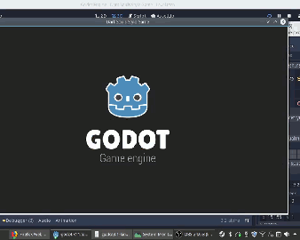
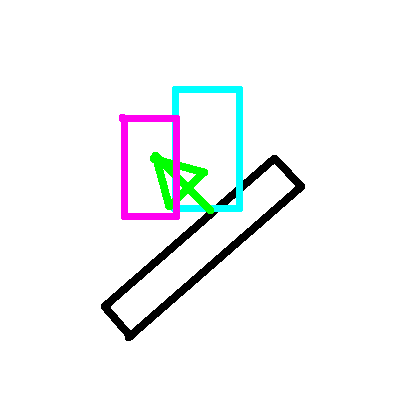

Godot 3.1 Kinematic Collision Response Fix Write Up
Hi, this is Patrick with Jank Studio. Recently I've decided that I'd like to work with the open source MIT Licensed Godot engine. However after digging into it I've found the the kinematic character controllers don't behave as expected, and this seems to have been a problem for some time. So in this write up I'll explain how exactly I went about fixing the Godot engine's kinematic collision response.
The problem arises in its most simple form when trying to use the move and collide function to apply gravity to a kinematic body, usually being used as a player character, while that body is on a sloped surface.
There's a lot of reasons that this could be happening, so the first thing I do is check the kinematic body class. The kinematic body is just an implementation of the physics body class (scene/3d/physicsbody.cpp). That's where the move and collide function that we use is called from. Now initially I thought the problem was here, and could be solved by implementing some kind of deadzone to cut off the excess movement value, which coincidentally is the exact fix that's implemented in the move and slide with snapping function. That however leads to inaccuracies, meaning that you can't ever actually trust the movement of the body, which I think is a bad environment to develop games in. So I prodded deeper, leading me into the (/modules/bullet/)bullet_physics_server.cpp class. Here there is a call to the body_test_motion function. It however just calls the body_test_motion function from inside of the /modules/bullet/_space_bullet.cpp class. Again I thought that I had struck the problem and spent around ten hours adding debug statements all around the function and learning exactly what each bit does. I didn't find the problem in this function, though it did end up being in this class. I traced a call down from test_body_motion into recover_from_penetration, then from there into RFP_convex_world_test, and after a few more hours of debug probing I found the specific problem was this line: "r_delta_recover_movement+= contactPointResult.m_pointNormalWorld * (contactPointResult.m_penetration_distance * -1 * p_recover_movement_scale);"
Now this doesn't really make sense if we creak apart what each piece is supposed to mean. We're setting the recover movement value to equal the normal value of the collision face * (the inverse penetration distance * recover_movement_scale). Now the first problem ins the recover_movement_scale value, with it having no ties to user input or settings. So we need to get rid of that. Now we're left with the recovery value being the collision normal * the inverse of the penetration distance. Now this kind of makes sense, in that what this will do is take the amount the body has overlapped the colliding body and push it away from the face of the body that was collided with. And if you use this setup on a flat surface, then it will actually result in the desired behavior. However, this math isn't correct for surface normals which don't fall on an axis (+-x,y,z).
This sketch depicts the update with the original code. The blue block is the kinematic body, the black body is a static body. The arrow is the correction, and the purple block is where the kinematic ends up at the end of the update. Notice that it isn't touching the static body. It then falls during the next update loop, resulting in our sliding effect. (Note that this was happening on a fiarly small scale, which is why it isn't terribly jittery).
Instead what we want to do is instead of using the collision normal to push the object away from the collided face, we instead want to push the kinematic back where it came from. To do this we need to pass the motion value from the test_body_motion function down into RFP_convex_world_test. Which is pretty simple to do. Now the final equation that I've come up with is the recovery value equals the motion normalized * the inverse penetration distance. This uses the inverse movement direction of the body multiplied by the distance that the body penetrated.

This sketch depicts what happens during the update loop with the new code. The blue rectangle is the kinematic after moving, the black rectangle is a static body, the arrow is the collision correction, while the purple rectangle is the final position of the kinematic body after it has been moved. Notice that it is touching the static body. This doesn't result in the sliding effect.
Now I don't actually know if there are other issues in, for example, in the RFP_convex_convex_test function where this same replaced bit of code shows up, where the code needs to be updated. I've tested colliding the kinematic against body convex and trimesh objects without issue, so I'm not sure when the RFP_convex_convex_test function is called. But what I did solved my problem, so I'm going to leave it at that. There are also some other problems that I've noticed, like the collision normal that is returned isn't correct every time, but it sometimes is, and I couldn't figure that one out yet, but now I can use Godot to create 3d games with relatively reliable collisions, so I'm not too mad.
I basically only bothered doing the write up to claim credit for the fix, because I don't know how to properly integrate my code back into the github project yet, so I'll probably just end up ask others for help with it, as a result it's very likely that I won't be credited with the fix. Please remember also that everyone who contributes to open source projects do so at their own expense, to the benefit of everyone. Make sure to donate to your favorite open source projects and individual contributers. If you'd like to support my work and perhaps are interested in the projects that I'm going to be making now that I've got Godot working how I want, consider donating: here or here. Also follow the Jank Studio social media accounts: